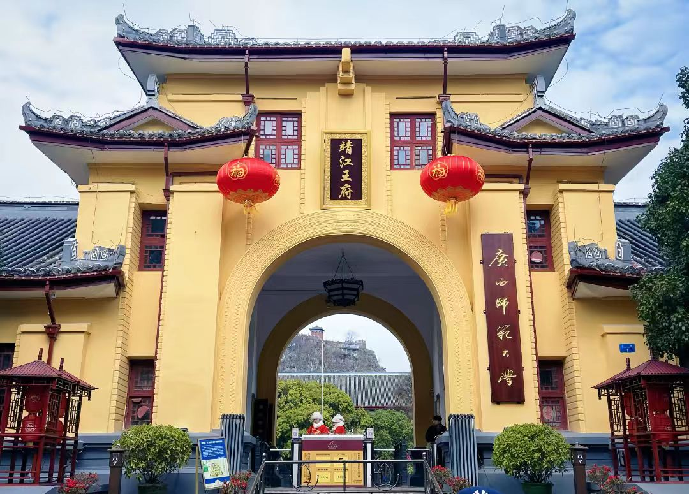

传奇：靖江王府位于广西桂林市中心独秀峰下，始建于明洪武五年（1372年），是明太祖朱元璋其侄孙朱守谦被封为靖江王时修造的王城。它是我国现存最完整的明代藩王府邸，比北京故宫早建34年，是"阅尽王城知桂林"的桂林历史文化缩影。从建成到清代改为贡院的近500年间，这里一直是广西政治、文化中心。2010年被列为国家考古遗址公园，2013年成为全国重点文物保护单位。
核心看点：
游览攻略：
交通信息：靖江王府位于桂林市秀峰区王城路1号。公交1路、2路、10路、11路、14路、18路、22路、24路、30路、91路、99路、100路等到"靖江王城"站。距桂林站3公里，车程10分钟；距桂林北站8公里，车程20分钟；距桂林两江国际机场28公里，车程40分钟。周边有象鼻山、两江四湖、正阳步行街、东西巷等景点。建议与象鼻山、芦笛岩、漓江组合游览。
建府背景：明洪武三年（1370年），朱元璋封其侄孙朱守谦为靖江王，藩国桂林。洪武五年（1372年），开始修建王府，历时20余年建成。王府选址独秀峰下，因独秀峰"孤峰独秀"，象征王权至高无上。王府建设动用数万军民，耗费巨大，规制仅次于南京故宫。
明代藩府：靖江王传十一世十四王，历时280年（1370-1650年）。第一代靖江王朱守谦，朱元璋长兄朱兴隆之孙。历代靖江王中，以第三代朱佐敬、第六代朱约麒、第十一代朱履焘较为著名。朱佐敬在位58年，修建独秀峰石刻；朱约麒好文，建宝善堂藏书；朱履焘年幼袭封，被清军杀害。靖江王府是明代存在时间最长的藩王府之一。
南明时期：清顺治七年（1650年），清定南王孔有德攻陷桂林。末代靖江王朱亨歅（第十一世朱履焘之侄）拒绝投降，在王府自焚殉国（一说被孔有德杀害）。孔有德占据王府，改为定南王府。顺治九年（1652年），李定国攻桂林，孔有德自焚，王府大部被毁。
清代贡院：康熙二十年（1681年），广西巡抚郝浴在王府旧址建立广西贡院。贡院规模宏大，有考舍5000余间，成为广西科举考试中心。清代广西共出状元4名，其中陈继昌（三元及第）、龙启瑞、张建勋、刘福姚均曾在广西贡院应试。贡院一直使用到光绪三十一年（1905年）科举废除。
近代变迁：光绪三十四年（1908年），贡院改为广西优级师范学堂。民国时期，先后为广西省立第二师范学校、广西省政府。1921年，孙中山北伐时曾在此设立大本营。1937年，改为广西省政府。1949年后，为广西师范学院（今广西师范大学）校址。
保护修复：1996年，靖江王府及王陵被列为全国重点文物保护单位。2000年，启动大规模考古发掘和修复工程。2010年，建成靖江王府考古遗址公园。2013年，完成承运殿、玉陛云阶等主要建筑的复原展示。现为桂林最重要的历史文化景区之一。
总体布局：靖江王府严格按照明代藩王府规制建造。①轴线：南北中轴线，前朝后寝；②规制：承运门（前朝）→承运殿（正殿）→存心殿（寝宫）→御苑（独秀峰、月牙池）；③附属：左祖右社，东有宗庙，西有社稷坛；④城墙：周长约1.5公里，高8米，底宽5.5米，顶宽3米，用方形青石砌筑，设四门。整座王府占地19.78公顷，是明代规模最大的藩王府之一。
承运殿：王府主殿，面阔五间（31米），进深三间（18米），高16米，重檐歇山顶，覆黄色琉璃瓦。殿前有月台，设云阶玉陛。殿内用金砖铺地，梁柱用楠木，斗拱用五彩。现存台基、柱础、石栏杆、云阶玉陛等。台基高2米，面积558平方米，可见当时规模。
玉陛云阶：承运殿前的石雕御道，用整块花岗岩雕成。①长度：22米，宽4.5米；②图案：中央雕蟠龙，两侧雕祥云、海水江崖；③工艺：采用高浮雕、浅浮雕相结合，立体感强；④等级：只有王府正殿前才能用云阶玉陛，体现藩王"一人之下，万人之上"的地位。这是全国藩王府中唯一保存完好的云阶玉陛。
独秀峰建筑：独秀峰是王府的天然屏风。①登山道：有306级石阶直达山顶；②亭台：有中山纪念塔、独秀亭、观音堂等；③石刻：136件摩崖石刻，跨越唐宋至民国；④洞府：有太平岩、雪洞、读书岩等洞穴。独秀峰与王府建筑有机结合，体现了"天人合一"的设计思想。
月牙池园林：月牙池是王府的御苑。①形状：形如弯月，长60米，宽20米；②建筑：池中有方壶亭、瀛洲亭，以曲桥相连；③植物：池畔植柳、桃、桂等花木；④功能：用于游赏、宴饮、读书。月牙池与独秀峰构成"山得水而活，水得山而媚"的园林意境。
建筑特色：靖江王府建筑体现广西地方特色。①材料：用本地青石、石灰岩；②工艺：融合汉族与壮族建筑技术；③装饰：简朴实用，不尚奢华；④防御：城墙坚固，有瓮城、敌楼。王府建筑是中原文化与岭南文化融合的产物。
王府教育：靖江王府设有宗学，教育王府子弟。①师资：聘请名儒为师；②课程：学习经史、诗文、书法；③目的：培养治国理政人才。历代靖江王多好文，第三代朱佐敬著有《桂林八景诗》，第六代朱约麒建宝善堂藏书万卷。王府还刻印书籍，传播文化。
贡院科举：清代广西贡院是西南科举重地。①规模：考舍5000余间，可容5000考生；②管理：有严格的管理制度，如搜身、锁院、誊录、对读等；③成就：清代广西4名状元均出于此，陈继昌是清代两个"三元及第"之一（乡试、会试、殿试均第一）；④影响：推动了广西文教发展，桂林成为"状元之乡"。
独秀峰石刻：独秀峰有摩崖石刻136件，是桂林石刻的精华。①年代：从唐代到民国，跨越1200年；②内容：有诗词、题记、榜书、画像等；③名家：有郑叔齐、王正功、吕愿忠、黄国材、张祥河等；④价值：是研究桂林历史、文学、书法、绘画的珍贵资料。"桂林山水甲天下"石刻是桂林的文化标志。
现代教育：靖江王府是广西现代教育的发源地。①广西优级师范学堂：1908年创办，是广西第一所高等师范学校；②广西师范大学：1953年成立，王城校区设在王府内，延续了文教传统；③名人：梁漱溟、陈望道、陈寅恪、薛暮桥等曾在此任教或讲学。王府-贡院-大学的文脉传承，在全国罕见。
文化研究：靖江王府是学术研究的重要对象。①考古：发现了大量明代建筑遗址、文物；②历史：研究明代藩封制度、桂林地方史；③建筑：研究明代王府建筑规制；④文化：研究桂林文化发展。出版有《靖江王府》《桂林石刻》等著作。
文化活动：靖江王府举办多种文化活动。①祭祀：恢复明代王府祭祀仪式；②科举：模拟清代科举考试；③研学：开展中小学生研学活动；④展览：举办历史文化展览；⑤演出：实景演出《靖江王府》。这些活动让历史文化"活"起来。
历史价值：靖江王府是桂林600年历史的见证。①政治史：明代藩王府，清代贡院，近代政府、学校，反映桂林政治变迁；②建筑史：明代藩王府建筑实物，研究中国古代建筑的重要资料；③教育史：从王府宗学、清代贡院到现代大学，体现教育连续性；④文化史："桂林山水甲天下"出处，桂林文化的象征。靖江王府是桂林的"历史教科书"。
建筑价值：靖江王府是中国古代建筑的杰出代表。①规制价值：完整的明代藩王府布局，体现礼制思想；②艺术价值：建筑与自然结合，独秀峰、月牙池构成优美景观；③技术价值：石雕、木构、砌筑等技术精湛；④科学价值：选址、排水、防御等设计科学。靖江王府是"建筑是凝固的音乐"的典范。
文化价值：靖江王府是桂林文化的核心。①山水文化："桂林山水甲天下"的精神源头；②科举文化：广西科举的见证，状元文化的载体；③教育文化：广西现代教育的发祥地；④旅游文化：桂林旅游的名片，年接待游客百万人次。靖江王府是桂林的文化地标和精神家园。
科学价值：靖江王府蕴含丰富的科学技术。①地质科学：独秀峰是典型的喀斯特孤峰，研究喀斯特地貌的样本；②材料科学：青石、石灰岩等地方材料的应用；③保护科学：石质文物、木构建筑的保护技术；④环境科学：建筑与自然环境的和谐共生。靖江王府是研究传统科学技术的宝贵实例。
旅游价值：靖江王府是桂林最重要的旅游景点之一。①景观价值：独秀峰、月牙池、古建筑构成独特景观；②体验价值：科举体验、登山观景、文化体验丰富；③经济价值：带动旅游及相关产业发展；④品牌价值："阅尽王城知桂林"成为桂林旅游口号。靖江王府是桂林旅游的黄金品牌。
保护与利用：靖江王府得到科学保护。①法律保护：1996年列为全国重点文物保护单位；②规划保护：编制《靖江王府保护规划》，划定保护区、建设控制地带；③工程保护：对古建筑进行维修加固，如承运殿台基保护、玉陛云阶修复；④研究展示：建立靖江王府博物馆，举办展览、出版著作；⑤合理利用：发展文化旅游，让文物"活"起来；⑥环境整治：整治周边环境，保护山水景观。靖江王府的保护经验，为大型遗址保护提供了借鉴。